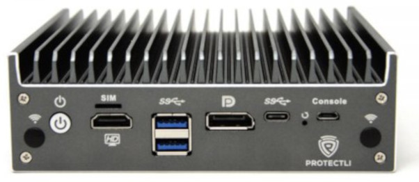
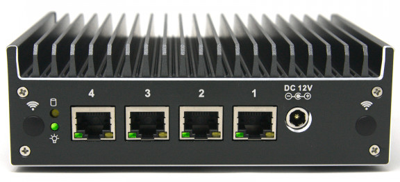
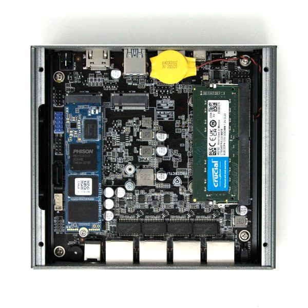

Protectli Vault VP2420
This page describes how to run coreboot on the [Protectli VP2420].


Required proprietary blobs
To build a minimal working coreboot image some blobs are required (assuming only the BIOS region is being modified).
Binary file |
Apply |
Required / Optional |
|---|---|---|
FSP-M, FSP-S |
Intel Firmware Support Package |
Required |
microcode |
CPU microcode |
Required |
FSP-M and FSP-S are obtained after splitting the Elkhart Lake FSP binary (done
automatically by the coreboot build system and included into the image) from
the 3rdparty/fsp submodule.
Microcode updates are automatically included into the coreboot image by build
system from the 3rdparty/intel-microcode submodule.
Flashing coreboot
Internal programming
The main SPI flash can be accessed using [flashrom]. Firmware can be easily flashed with internal programmer (either BIOS region or full image).
External programming
The system has an internal flash chip which is a 16 MiB soldered SOIC-8 chip. This chip is located on the top side of the case (the lid side). One has to remove 4 top cover screws and lift up the lid. The flash chip is soldered in under RAM, easily accessed after taking out the memory. Specifically, it’s a KH25L12835F (3.3V) which is a clone of Macronix MX25L12835F - [datasheet][MX25L12835F].

Working
USB 3.0 front ports (SeaBIOS, Tianocore UEFIPayload and Linux)
4 Ethernet ports
HDMI, DisplayPort
flashrom
M.2 WiFi
M.2 4G LTE
M.2 SATA and NVMe
2.5’’ SATA SSD
eMMC
Super I/O serial port 0 via front microUSB connector
SMBus (reading SPD from DIMMs)
Initialization with Elkhart Lake FSP 2.0
SeaBIOS payload (version rel-1.16.0)
TianoCore UEFIPayload
Reset switch
Booting Debian, Ubuntu, FreeBSD
Technology
CPU |
Intel Celeron J6412 |
PCH |
Intel Elkhart Lake |
Super I/O, EC |
ITE IT8613E |
Coprocessor |
Intel Management Engine |